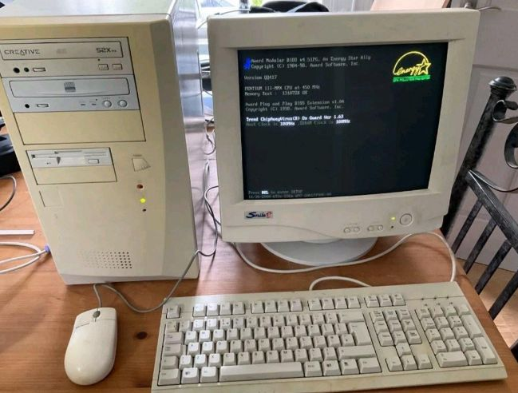

2001: El "Punto Cero" Digital
El año 2001 representa el inicio de la brecha digital. La UCE operaba bajo un modelo de "islas informáticas" con dependencia de líneas telefónicas básicas.
Estado del Proyecto: Conectividad Básica
- 🔌 Tecnología: Dial-up (56 kbps) vía línea telefónica.
- 💰 Presupuesto Operativo: Aprox. $12,000 USD anuales (Pago a Andinatel).
- 👤 Encargado: Direcciones Administrativas de cada Facultad (Descentralizado).

Figura 1: Equipamiento típico en oficinas administrativas en 2001.
Infraestructura Limitada
La conexión a internet era un lujo. La mayoría de los trámites eran 100% físicos y las bibliotecas usaban ficheros de cartón.
Fuentes:
- Arcotel - Historia del Internet en Ecuador
- Informes de Gestión 2001 - Archivo General UCE.